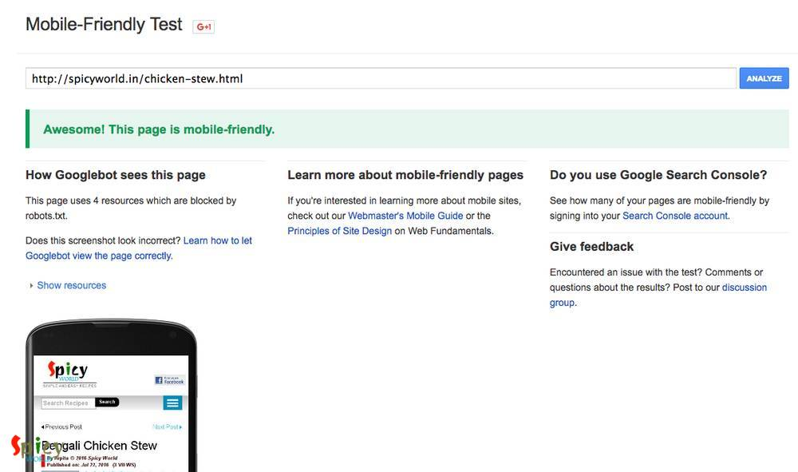
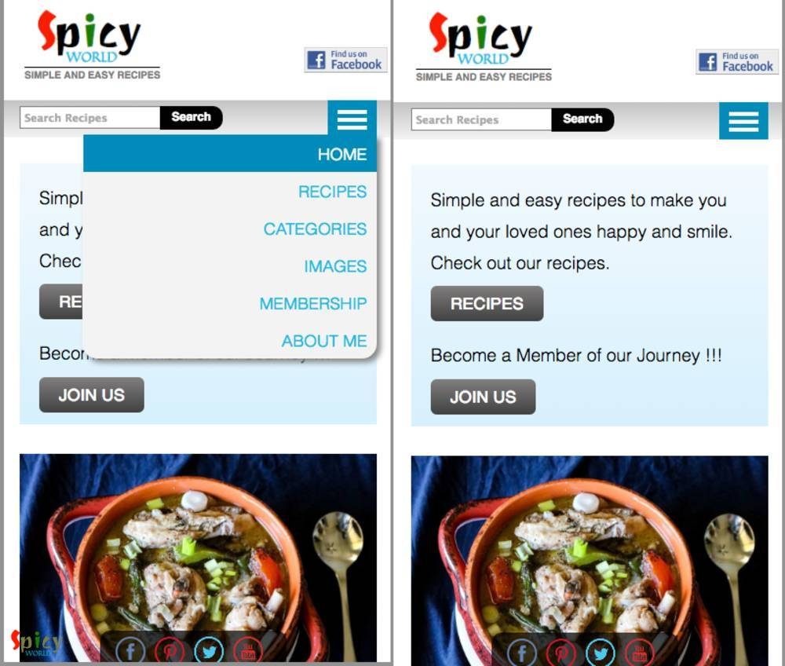
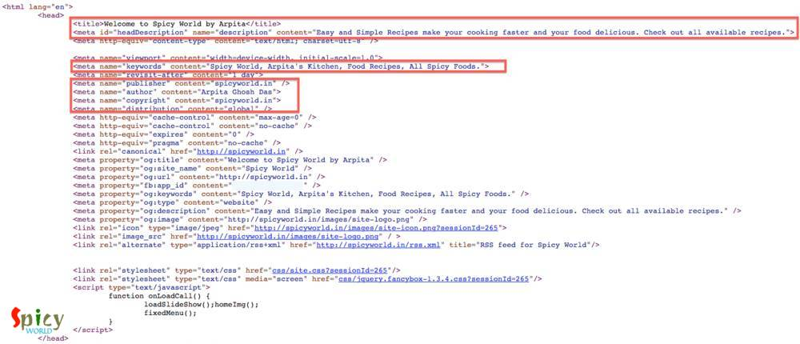
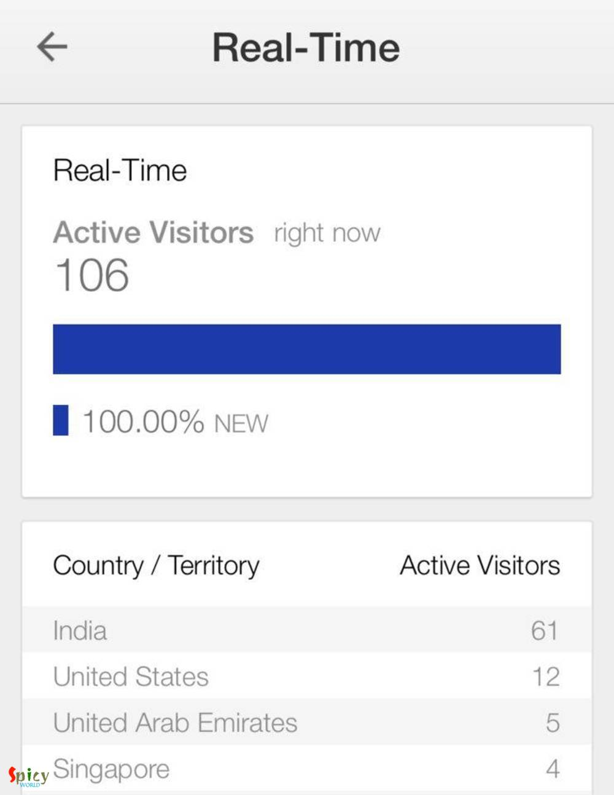
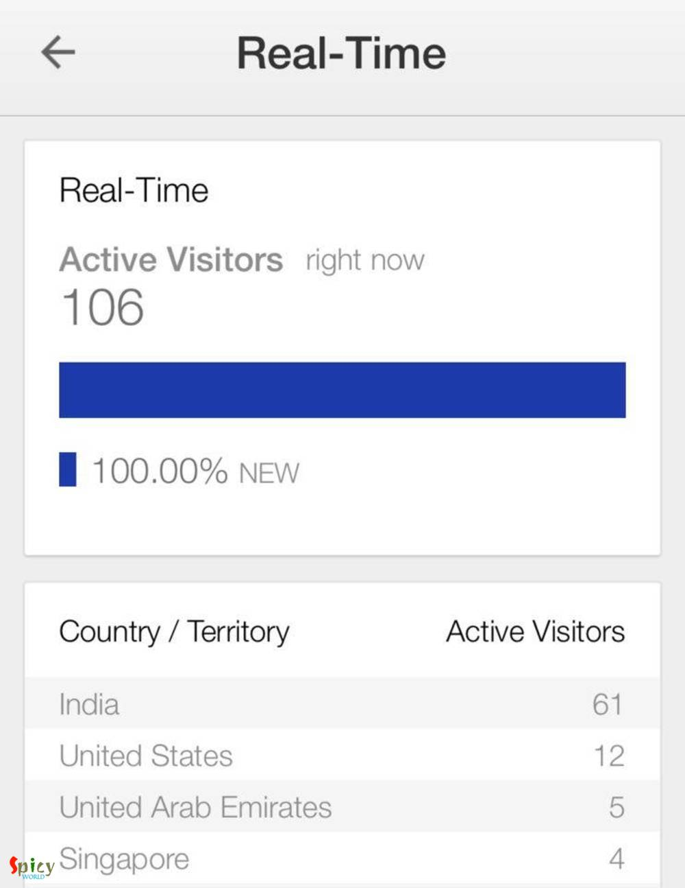

Simple and Easy Recipes
Launching a Blog / Website
© 2016 Spicy World, Published on: Jul 31, 2016
Let me take the opportunity to talk about launching/hosting a blog!!! Surprised?? Me too!!! I was looking for something when we moved to Austin, TX from Edison, NJ as I was feeling so alone as there are no good friends around. So kind of nagging everyday to him, then he told me "why not you start a cooking recipe blog?" I will not be selfish here, I am also interested about food and cooking, so quickly 'buy in' the idea. Now "he" wants to use his web designing knowledge to build a custom blog instead of using any open source tools. We are going to explain high level about the website launching and best practices.

Basic Requirements
Buying a Domain Its the most basic thing for any website to have its own domain or URL. You can get such url at very low cost from various domain providers. You need to choose a name and then book a relevant URL from any domain providers. We bought our domain very cheap, it costs around Rs 2000 for 5 years.
Point to Your Server Once you get your domain you can configure that to point to the place where your code or web application is present, you can host it in github (for static web pages) or it can be hosted in any cloud provided application / web servers based upon your requirements. Once you login into your domain (from where you purchased) you can configure and point the URL to the server where your application is deployed just by specifying the IP address. Its easy, simple and quick process.
Responsive Web Design (RWD)
What is responsive web design? The web design that fits to any kind of devices based upon the device capability. Be it desktop/laptop/mobile device or table the website display fits without distortion. And it looks good and user feels that the UI/UX is meant for the device.
Choose your tool or use custom code to write your blog/website. You can use javascript libraries such as bootstrap to build responsive design if you are building your own website.
Google provide mobile friendly checking facility where a webpage can be checked whether that is mobile friendly or not. Refer Mobile-Friendly Test
Choose your tool or use custom code to write your blog/website. You can use javascript libraries such as bootstrap to build responsive design if you are building your own website.
Google provide mobile friendly checking facility where a webpage can be checked whether that is mobile friendly or not. Refer Mobile-Friendly Test
HTML Validation
A valid HTML page for the website means its searchable and accessible properly. HTML pages must meet the W3C standards. 100% valid and error free the web site allow you to get proper weights in the SEO which means its not accessible as well as not search friendly. (Refer W3C website: https://validator.w3.org/)

Search Engine Optimization (SEO) Best Practices
There are lot of SEO (Search Engine Optimization) aspects but I am going to talk only about the web page URL and Page Title here that will allow your website to high in the rank and at the top of the results of any search engines such as Google, Bing etc.
- Use CANONICAL tag, in case multiple URLs pointing to same content. Try to avoid this scenario.
- Dynamic parameterization in the URL is not recommended until they are absolutely needed. And based upon that if your are changing page content that's not good as well.
- Shorter and meaningful page URLs are recommended.
- If both page URL and Page Title are same then its highly searchable.
- Do not include stop words in the Page URL or in Page title.
- Less folder nesting in the URL is recommended.
- Case mixing in the URL is not a good option, try to use all lower case.
- Repetition of same word in the URL is not recommended.

HTML Structure/Design Some high level HTML design points are mentioned here. You can always search in web for more details related to the topic.
- Each page must have unique page title.
- All the web page title should be same as H1 tag of the page to gain more weight in SEO.
- All Images in the website must have proper ALT tag which describes the image and also add title tags.
- Inside body tag use proper nested HTML structure.

Performance Improvement Considerations
Its always a challenge to load quickly and support concurrent users for any web applications. Some quick things you can do without investing lot of time and effort.
- For javascript and CSS files user compressor such as YUI Compressor which helps minifying those files (basically convert them into optimum file with a single line, less size). This helps those to load quickly and also puts a factor of security for your Javascript code that way those codes are not readable by blank eye.
- Use Content Delivery Network (CDN) which allows your static assets such as images, CSS and JavaScripts to be delivered from outside your server infrastructure. This is kind of cloud server near your physical location which servers those files for better performance.
- User max of 2 to 3 types of Fonts in the webpage and try not to use custom fonts those needs to be loaded from third party source or from your own server because that will slowdown your overall performance.
- Images must be web ready (72 to 96dpi), not in high DPI or printable formats.
- Keep monitoring your page speed in regular intervals via browser plugins for free such as Google Chrome developer console. And fix problems as and when you notice them.
- Do not use inline style or JavaScript instead try to put all JavaScript and CSS into a single file each of them.
Meta Tags in Web Page
All webpage must have the following meta tags that way its easy for search engines to index them and store their information in proper format.
Setting up Google Analytics
Google Analytics account setup is a must for any website or blog this allows you to track lot of information, generate reports such as page views, country/city where you website is accessed the most, devices those are used the most, from where most of the traffic is coming to your website. Its easy to setup and free, you just need to register to Google Analytics using your google/gmail email address and few easy understandable steps. Thats it. Google Analytics (GA) is also available in mobile devices in app form. So its easy to track activity on the website at your finger tip.
 
Use of robots.txt The links or URL patterns you do not want crawlers to crawl so that they do not appear in search results.

I try to provide as much information possible in this blog. Please feel free to send your questions and suggestions. Also if you think something needs edit in the post please let us know.
Tags:technical